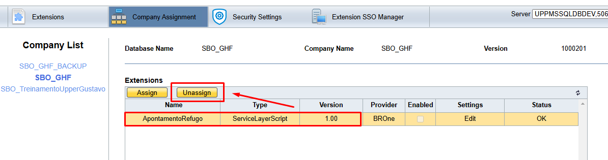
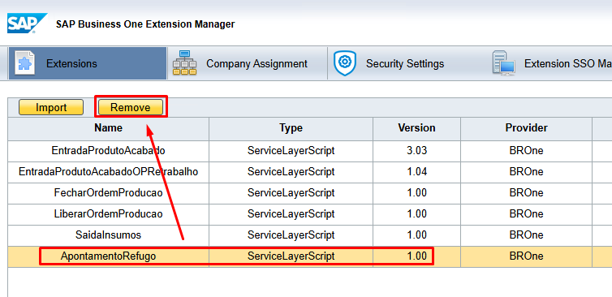

Configurar Endpoints
Este documento explica os passos necessários para realizar a configuração dos endpoints da API com a base que será utiliza na API.
1. Extração dos Endpoints da API
Antes de iniciar a configuração, é necessário baixar e extrair os endpoints compatíveis com o tipo de banco de dados utilizado pela sua empresa.
2. Importação dos Endpoints no Extension Manager
Após a extração dos arquivos, é necessário importar os endpoints no SAP Business One utilizando o Extension Manager.
Passos:
Dentro do Extension Manager, acesse a aba Extensions:
{kind=link}
Utilize o botão Importar, e na sequência o botão Browse para buscar o endpoint desejado:
{kind=link}
Selecione o arquivo de endpoint desejado e clique em Upload:
{kind=link}
O upload do endpoint será realizado, nesse momento, basta clicar em Next e Finish:
{kind=link}
{kind=link}
{kind=link}
Confirme a importação do endpoint na aba e verifique se o foi adicionado com sucesso na lista de extensões.
{kind=link}
3. Vínculo dos Endpoints da API
Para que os endpoints funcionem corretamente, é necessário vinculá-los às bases de dados desejadas.
Passos:
No Extension Manager do SAP, acesse a aba Company Assignment:
{kind=link}
Selecione a base que deseja utilizar no vínculo do endpoint e clique em Assign:
{kind=link}
Escolha o endpoint que deseja vincular a base selecionada e clique em Next:
{kind=link}
Avance as telas utilizando o botão Next e para finalizar clique em Finish:
{kind=link}
{kind=link}
{kind=link}
Após finalizar o vínculo, o mesmo será exibido na grade de extensões vinculadas na base:
{kind=link}
Teste o endpoint vinculado para garantir para garantir o correto funcionamento.
Remoção de endpoint da base ou do Extension Manager
É possível desvincular o endpoint de uma base, para isso, deve-se acessar a aba Company Assignment, selecionar a base desejada e na lista das extensões vinculadas, selecionar o endpoint desejado e clicar em Unassign.
{kind=link}
É possível remover o endpoint do Extension Manager, para isso, deve-se acessar a aba Extensions, selecionar o endpoint desejado e clicar em Remove.
{kind=link}